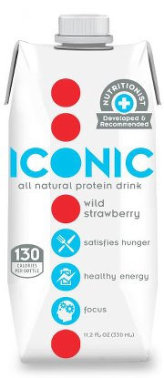

Consulting Projects
The Lens
The Lens is a non-profit investigative journalism outlet that strives to provide in-depth reporting on topics important to New Orleans. Its website is at www.thelensnola.org.
ABB Group
ABB Group leads the way in power and automation technology, helping utilities lessen their environmental impact and boost performance. ABB is active in about 100 countries and reported $40 billion in global revenue in 2011. Learn more at www.abb.com.
Be Well

Be Well Nutrition is a new start-up that is launching a “non-carbonated beverage that offers a convenient, nutritional alternative” for people without time for a full meal. The drink, called Iconic, is fortified with protein and vitamins and promises to satisfy hunger, provide health energy and increase focus and alertness, and with all-natural ingredients. Learn more at http://www.drinkiconic.com
City of New Orleans
The city wants to eliminate inefficiencies and establish a parking-management plan. It also wants to explore the potential creation of a parking authority. Ultimately, the FCG aims to give the city a set of well-researched set of options and a recommendation as to which options they should pursue, backed up by financial projections.
Mayor's Office of Cultural Economy
The Freeman Consulting Group team will assist the Mayor's Office of Cultural Economy with outlining and potentially helping to streamline the process for application and reception of state tax credits for Live Performance productions. While the movie industry and large film production space has grown rapidly through the frequent use of the Film Tax credit program, only one known Live Production (Addams Family) has qualified, applied and received the tax credits, and the process took nearly 10 months.
Offshore Inland
Offshore Inland (OI) is an oilfield and marine contracting services provider that designs, fabricates and installs rig and ship upgrades and repairs. They currently have five US locations: Port Fourchon, Galveston, Mobile and Pensacola. The project will focus on their two newest locations, Pensacola and Galveston, and will include a feasibility study and strategic plan for each.
Robinson Lumber
Robinson Lumber is a locally owned lumber supplier that practices sustainable forest management while provider top-quality tropical wood. The FCG will help Robinson Lumber by measuring customers' and employees' perceptions of the firm and recommending ways to improve satisfaction among both.
South Coast Angel Fund
South Coast Angel Fund is a member-managed venture-capital fund that invests primarily in the Gulf Coast region. The Freeman Consulting Group team will assist South Coast Angel Fund by exploring alternative methods of reporting key financial and operational metrics from firms in which South Coast has invested.